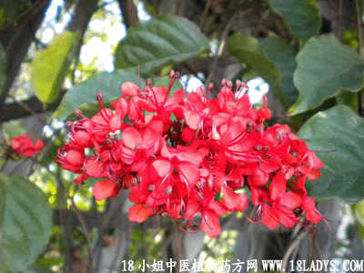

(本文解释权归中药材天地网兄弟站-中药大全-中医植物药方网所有,如需转载请注明出处)

别名：白菱根。
植物名：赪桐。
生长环境：本品为直立灌木。通常栽培或生于山地较潮湿灌木丛中。
分布：我国南部，广东以广州栽培较多。
入药部分：根。
采集期：全年采根。
自采地点：家种。
性味：性微凉、味甘。
功能：清肝肺热。
主治、用量和用法：1、苦上咳血：干用1至2两、清水煎服，或加猪瘦肉同煎；2、肺燥咳血：用法同上。
验方：（治苦伤咳血方）红菱根1两、五爪龙根1两、红丝线5钱、红李根5钱、苦灯笼根5钱，清水五碗、煎成一碗半服。
（方解）红菱根清肝肺热、散瘀、除痰止咳；五爪龙、苦灯笼行气、散瘀；红丝线清肝肺热、止血；红李根则长于止血。合为清肝肺热、化气活血散瘀之剂。
（方歌）苦伤咳血红菱根，五龙化瘀血生新，苦灯红李红丝线，清肺凉肝血不卷。
(本文解释权归中药材天地网兄弟站-中药大全-中医植物药方网所有,如需转载请注明出处)